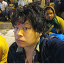
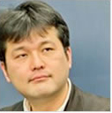

![Business Day 2014.9.18[Thu]-19[Fri] Public Day 2014.9.20[Sat]-21[Sun] @ Makuhari Messe](../../../en/common/images/pc_date.png)


Cooperation by：International Game Developers Association Japan Chapter(IDGA Japan)
Joined Microsoft in 1997, Akihiro is responsible for Interactive Entertainment Business Developer Ecosystem. Which includes technical support for game developer regarding Xbox 360、Xbox One and Windows、Windows Phone, and the indie game developer support program ID@Xbox, application development assistance and promotion, and service for entertainment contents developers using Microsoft platform such as Kinect for Windows business.

Brandon Sheffield is director of indie game studio Necrosoft Games, former editor in chief of Game Developer magazine, and co-founder of the east bay game dev group, and multiple game jams. He occasionally still writes for Gamasutra.com as their senior contributing editor, and is an adviser to multiple game conferences and competitions, including GDC, Digital Dragons, Sense of Wonder Night, Pixel Heaven, and GDC China. He likes connecting people, making weird things, living in Oakland, and speaking at game conferences in exotic places.

Kitayama has established Shindenken in 2002. He has served Comic Market 20 times and has addressed Dorkbot, Sense of Wonder Night, and IGDA conference. He has developed more than 20 game titles including "I will be God of the Forest World", "Genius Scientist Bio Ruru", and "QUALIA". His game creation continues especially in the areas applied with AI technologies such as artificial life, and celluar automation.
As Joju Games Founder and Studio Manager Juan Gril has more than 15 years of experience developing casual games. Joju Games produces casual games for international clients including Atari, MTV Networks, and Disney. Juan is the Director of the Indie Showcase at Casual Connect, Advisor for the Free2Play Design and Business Summit at GDC, and an Editor of the IGDA Casual Games White Paper as well as The former head of Yahoo! Games Studios and a founding member of the team. He thinks the video game is the coolest thing ever.

Baba joined NHN Japan in 2004 as game server programmer. After serving as a director of Game Development Division and Game Business Division, Mr. Baba is currently assigned as Executive Officer and Senior Manager for Smartphone Game Production Department. Since splitting up from LINE Corporation, he manages in-house smartphone game development as an executive director.

Born in 1970, He is Journalist (Video Game / IT) and the Founder and Director Emeritus of International Game Developers Association Japan (IGDA Japan). He is also the instructor at Ritsumeikan University College of Image Arts and Science. He contributes articles to Nikkei newspaper, Famitsu.com, Weekly Agora, and released “The rise and fall of the Game Industry” (Agora Publishing). He also manages Yomuneco webiste that is the support site for eBook self-publishing.

Koji joined SCE in 1994 and has produced multiple titles for PlayStation® as a director. He managed Motion Capture Studio and Sound Team, then engaged in production of several game titles as a producer from 2000. Since 2013 he is in charge of developer relation of Asia region in SCE.
Simon is the EVP of UBM Tech’s Game Network, meaning that he manages products such as Game Developers Conference - both the San Francisco mothership and satellite shows in Los Angeles, Germany, and China. He is Chairman Emeritus of the yearly ‘Sundance Festival for games’, the Independent Games Festival, which holds its awards at Game Developers Conference yearly, and co-programs the Independent Games Summit events at 3 of the 4 GDCs. He also devised and co-founded prominent indie game bundle website IndieRoyale.com.
Yajima has joined GREE, Inc. in August 2006. Yajima supervised GREE mobile phone project, a joint venture with KDDI as project manager. He had taken in charge of GREE avatar service, and GREE in-house product. Yajima currently serves as consulting and planning of 3rd party apps in GREE platform business.

Zako-Zako achieved three consecutive years' presentations and awards winning Hudson/GMO award in SOWN2011, GMO award in 2012 and BestPresentationAward by TSURI last year. Every year is shocking game idea brought on the stage with heavy excitement from audience. Presentation style may be much to do with such excitement. Regardless of a rumor that awarded games would be ghost-written, they are selected as screening member. They are a middle age creative gang caring for applications without scenario.

2002-2014 CESA / Nikkei Business Publications, Inc. All rights reserved.